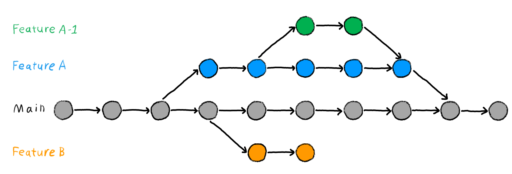

![]()
| Command | Description |
|---|---|
git branch |
Lists / creates and deletes branches |
git branch feature |
Creates the feature branch |
git branch -d feature |
Deletes the feature branch |
git switch |
Switches between branches |
git switch feature |
Switches to the feature branch |
git checkout |
Switches between branches |
git checkout -b feature |
Creates and switches to the feature branch |
git merge |
Merges branches |
git merge feature |
Merges the feature branch into the current branch |
git merge --abort |
Aborts a merge |
git merge --squash |
Squaches commits on branch into a single commit and merge |
Session 5: Branches
Track, organize and share your work: An introduction to Git for research
Course at Max Planck Institute for Human Development
Slides | Source


12:00
1 This session: Branches
This session: Branches

Learning objectives
💡 You understand the purpose and benefits of using branches in Git.
💡 You can create and switch between branches.
💡 You can merge branches and resolve merge conflicts.
💡 You can name at least three best practices when working with branches.
Reading
Tasks
In this session, you will work on the following tasks:
- Reading: Read the chapter(s) “Branches” in the Version Control Book.
- Implementation: Try out the commands in the chapter.
- Exercises: Work on the exercises for the
recipesproject.
As always:
- Try out the commands of this session and play around with them.
- Check whether you have achieved the learning objectives.
- Ask questions!
- Let’s git started!
recipes project
At the end of this session, you should have accomplished the following:
- You created a new branch and merged changes into your default branch (
mainormaster). - You created and resolved a merge conflict.
Please keep the recipes folder! We will continue to use it in the following sessions.
Cheatsheet
Exercises
Branches
- If needed, navigate to the project repository using the command line.
- Create a new branch called
feature. - Switch to the new branch.
- Add a new entry to your project text file.
- Stage and commit the changes to the project text file on the
featurebranch. - View the contents of project text file to verify your changes.
- Switch back to the default branch (
mainormaster). - View the contents of the project text file again to confirm that the previous changes do not exist on the default branch.
- Merge the
featurebranch into your default branch. - Delete the
featurebranch. - View the contents of project text file yet again to confirm that the previous changes have been merged into the default branch.
🚀 Bonus exercises
Create and resolve a merge conflict
- Deliberately create a merge conflict by editing the same section of a file on two separate branches and attempting to merge them. An example can be found in the branches chapter.
- Resolve the merge conflict.
- Delete the merged branch afterwards.
Solutions: Branches
{zsh, filename="Code"} #| eval: false #| file: sessions/git-branches/code/code-exercises-branches-recipes.sh 1. Optional: Navigate into the project repository using cd (or a similar path). 1. Create a new branch called feature using git branch feature. 1. Switch to the new branch using git switch feature. You can also create and switch the branch in one step using git checkout -b feature. 1. Add a new entry to your project text file file. You can use your regular text editor. Here, we add a new entry from the command line using cat. 1. Stage and commit the changes to your project text file using git add and git commit. 1. View the contents of your project text file to verify your changes. Here, we use the cat command again. 1. Switch back to the default branch (main in this example). Here, we use git checkout main but you can also use git switch main. 1. View the contents of your project text file again to confirm that the previous changes do not exist on the main branch. 1. Merge the changes feature branch into the main branch. 1. Delete the merged feature branch using git branch -d feature. 1. View the contents of your project text file yet again to confirm that the previous changes have been merged into the main branch.
Solutions: Merge Conflict
{zsh, filename="Code"} #| eval: false #| file: sessions/git-branches/code/code-exercises-branches-merge-conflict.sh 1. Navigate into the recipes repository using cd (or a similar path). 1. Create a new branch called feature using git branch feature. 1. Switch to the new branch using git switch feature. You can also create and switch the branch in one step using git checkout -b feature. 1. Add a new recipe to your recipes.txt file using cat. 1. Stage and commit the changes to recipes.txt using git add and git commit. 1. Switch back to the default branch (main in this example) using git checkout main. You can also use git switch main. 1. Make conflicting changes in the main branch to recipes.txt using cat. 1. Stage and commit the conflicting changes to recipes.txt using git add and git commit. 1. Attempt to merge the feature branch with the default branch to create a merge conflict using git merge feature. 1. Resolve the merge conflict by editing recipes.txt. You can use a regular text editor to do this. In this example, we remove the conflict markers that Git added to recipes.txt using sed which results in keeping both recipes. This is not a recommended way to resolve merge conflicts and we only do it here to resolve the merge conflict without manual intervention. Merge conflicts usually always require manual resolution by the user. 1. Stage the resolved changes to recipes.txt using git add. 1. Commit the resolved changes in recipes.txt with a descriptive commit message using git commit. 1. Delete the merged feature branch using git branch -d feature.
Version Control Course